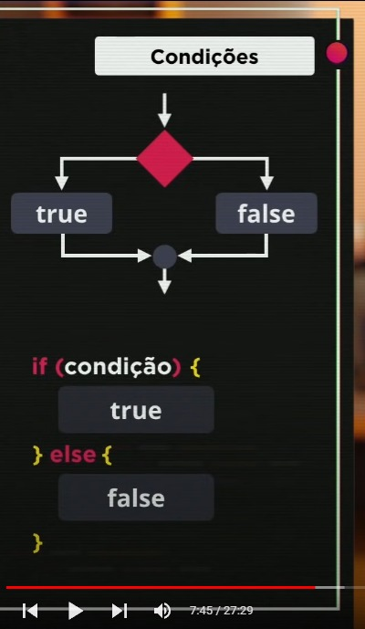
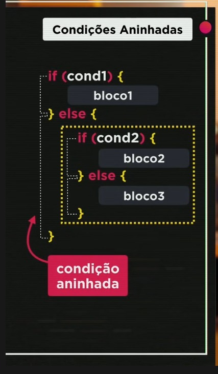
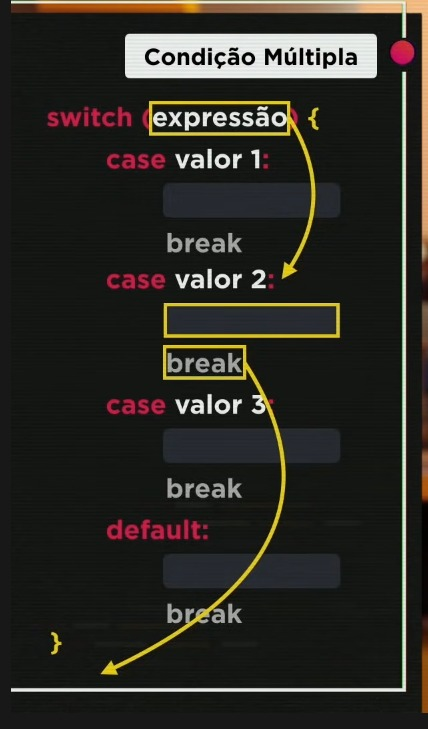

Quando temos um comando que desejamos apenas executar em uma condição específica, utilizamos uma bifurcação chamada desvio condicional, onde o código só processegue com a execução assim que a condição for satisfeita positivamente ou negativamente, ou seja, se a condição que desejarmos for atendida no desvio condicional o código segue pelo lado positivo, caso a condição não seja atendida, ele ou apenas continua o código sem executar outro comando, ou podemos colocar um comando para execução quando essa condição não for atendida e assim também continuar o código.
A condição que desejamos será utilizada na seguinte sitaxe utilizando o código if, onde dentro de parenteses vai a tal condição que queremos atender para prosseguir com o código: if(condição). Abrimos um bloco para o código, que nada mais é que a abertura e fechamento de chaves, e dentro desse primeiro bloco colocamos o código que queremos executar caso a condição seja verdadeira, ou seja, seja atendida. Ao final da chave do primeiro bloco, escrevemos a palavra else e abrimos e fechamos chaves também, e nesse bloco colocamos o código para execução caso a condição seja falsa, ou seja, não foi atendida
Caso a condição não tenha um bloco para executar quando ela for falsa, chamamos de condição simples, onde somente o if é utilizado juntamente com a condição. Nesse caso, se a condição não for atendida o código simplesmente continua executando as demais linhas que vem a seguir, mas se a condição for atendida, o bloco é executado e o código também continua normalmente após a execução do mesmo
Agora, quando temos uma condição onde tanto se for verdadeira quanto se for falsa tem um código a ser executado, nesse caso utilizando o if e o else, temos uma condição composta
Temos a possibilidade de colocar uma condição dentro da outra, criando assim mais possibilidades de caminhos para nosso código, quando fazemos isso, estamos aninhando uma condição dentro da outra e utilizamos a seguinte sintaxe:
Não há necessidade de abrir um bloco para o else e colocar o if, podemos reduzir isso para else if, colocando a consição e ai sim abrindo mais um bloco, ficando
if(){
}else if(){
}
A condição multipla é muito situacional, pois é utilizada para valores fixos, quando quero trabalhar apenas valores sem intervalos. Utilizamos uma expressão que será testada, e o resultado dessa expressão é o que vai determinar para onde o código vai seguir. A sintaxe é a seguinte, utilizamos a palavra switch e entre parenteses colocamos a expressão, abrimos o bloco com chaves e dentro dele colocamos os valores utilizando o case antes dele. Temos um valor padrão que usamos o default no lugar do case e colocamos o código que queremos executar caso nenhum dos valores seja resultado
Importante: ao final de cada case precisamos obrigatóriamente colocar o comando break, para que o código para se ser lido assim que executar a condição desejada e continue o seu fluxo normalmente saindo do switch.